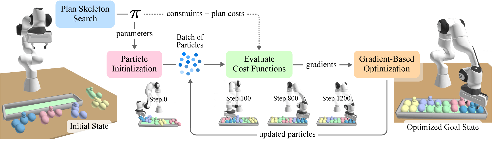

From Pixels to Predicates:
Learning Symbolic World Models via Pretrained Vision-Language Models
Abstract
Our aim is to learn to solve long-horizon decision-making problems in complex robotics domains given low-level skills and a handful of short-horizon demonstrations containing sequences of images. To this end, we focus on learning abstract symbolic world models that facilitate zero-shot generalization to novel goals via planning. A critical component of such models is the set of symbolic predicates that define properties of and relationships between objects. In this work, we leverage pretrained vision-language models (VLMs) to propose a large set of visual predicates potentially relevant for decision-making, and to evaluate those predicates directly from camera images. At training time, we pass the proposed predicates and demonstrations into an optimization-based model-learning algorithm to obtain an abstract symbolic world model that is defined in terms of a compact subset of the proposed predicates. At test time, given a novel goal in a novel setting, we use the VLM to construct a symbolic description of the current world state, and then use a search-based planning algorithm to find a sequence of low-level skills that achieves the goal. We demonstrate empirically across experiments in both simulation and the real world that our method can generalize aggressively, applying its learned world model to solve problems with a wide variety of object types, arrangements, numbers of objects, and visual backgrounds, as well as novel goals and much longer horizons than those seen at training time.
Method
pix2pred Overview. cuTAMP frames TAMP as a backtracking bilevel search over plan skeletons. Each skeleton $\pi$ induces a continuous Constraint Satisfaction Problem that defines the structure of a particle (parameters) and cost functions (constraints and plan costs). These particles are optimized in parallel by evaluating their costs with differentiable cost functions, allowing gradient-based optimizers to iteratively update them towards satisfying solutions.
Solving Highly-Constrained Problems
In the Tetris domain, the robot's objective is to pack 5 blocks with non-convex shapes somewhere in a tight goal region. This problem requires reasoning about spatial arrangements, as the shapes will only fit if they are arranged in particular configuration modes.
We optimize for placement poses, parametrized as continuous 4-DOF actions with positions $(x, y, z)$ and yaw angles $\theta$, along with their associated 7-DOF robot joint positions. Each particle is 90-dimensional (ten 7-DOF arm configurations and five 4-DOF placement poses). We sample a fixed set of grasps and use an off-the-shelf motion planner (cuRobo) to solve for the full trajectories.
We visualize the placement poses corresponding to the best particle as optimization progress.
We show the full execution of the TAMP plan for the best particle. cuTAMP optimizes for a solution in just seconds.
Optimizing Goal Costs
cuTAMP supports optimizing plan costs. We consider placing four objects into a large goal region and set a goal cost to minimize the distance between the objects in the final state. Our results demonstrate the clear benefit of combining sampling with differentiable optimization for substantially reducing the goal cost.
We compare the final state after executing the best particle. (a) cuTAMP achieves significantly lower cost compared to (b) parallelized sampling which performs no optimization.
We minimize the $y$-position of three cubes on a real Kinova Gen3 robot.
Efficiently Searching over Plan Skeletons
To efficiently guide the discrete search over plan skeletons and avoid optimizing unsolvable ones, we exploit parallelized constraint sampling from particle initialization to derive a plan feasibility heuristic. cuTAMP prioritizes skeletons for refinement based on their estimated feasibility, focusing our computational effort on those most likely to admit solutions.
In Stick Button, the robot must press the red, green, and blue buttons using either its fingers or a stick as a tool. Due to the kinematic limitations of the Franka, the robot must use the stick to press the blue and green buttons, as they are out of direct reach. This results in a large number of plan skeletons that are infeasible or have extraneous actions. The best configuration of cuTAMP solves this problem in under 1.5 seconds.
The blue button is beyond the reach of the Franka, requiring it to use the stick as a tool. In contrast, the UR5 can directly reach the button.
The Mustard Bottle and Canister are obstructing the placement. cuTAMP reasons to move these objects out of the way first, before stacking the blocks.
The strawberry 🍓 is obstructed by Lego blocks on all four sides, requiring at least two blocks to be moved out of the way. This task requires more planning time as there are many more skeletons to be considered (there are 5698 skeletons in total).
Citation
@inproceedings{athalye2025pix2pred,
title={From Pixels to Predicates: Learning Symbolic World Models via Pretrained Vision-Language Models},
author={Athalye, Ashay and Kumar, Nishanth and Silver, Tom and Liang, Yichao and Wang, Jiuguang and Lozano-P{\'e}rez, Tom{\'a}s and Kaelbling, Leslie Pack},
booktitle={Proceedings of the Conference on Robot Learning (CoRL)},
year={2025},
note={To appear}}
Updated April 2025